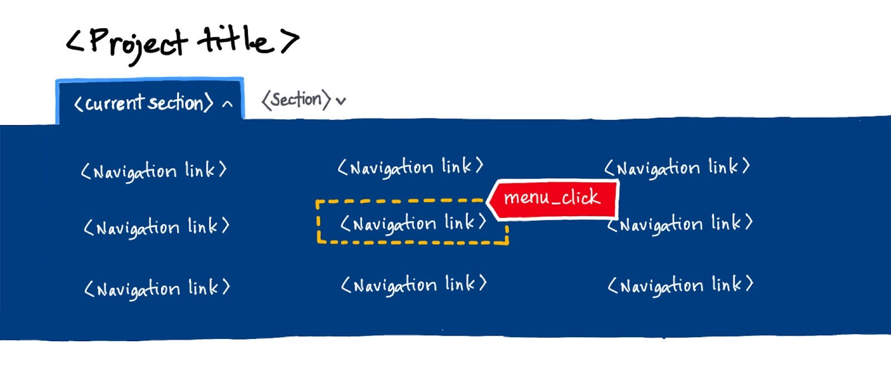
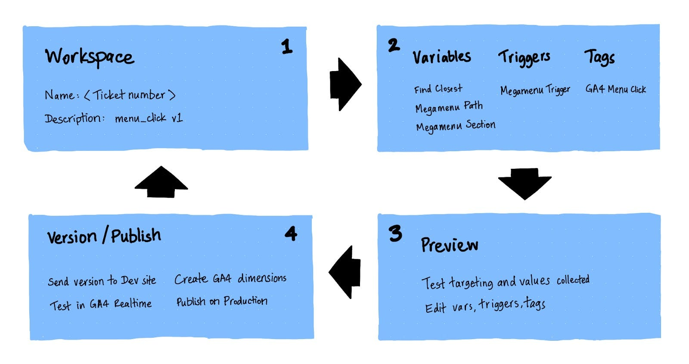
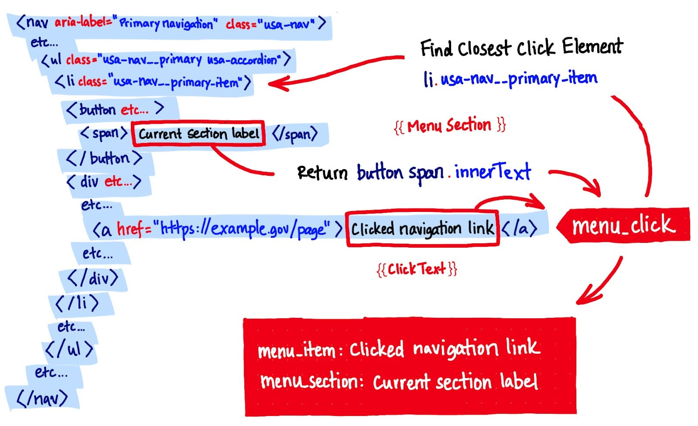

This guide focuses on measuring user interactions with components from the US Web Design System (USWDS) implemented in a Drupal site, but should be useful for anyone interested in custom event tracking.
In this article I’ll outline why we added an additional analytics tool, how we did it, and the role we see it playing in our broader UX research strategy.
Farewell, Universal Analytics
Now that nightfall has descended on Universal Analytics (UA), a product that’s been relatively stable over its decade-long existence, Google Analytics 4 (GA4) is having its moment, and the new version is quite different from its predecessor. The platform has been thoroughly redesigned to account for contemporary realities where on-page (or on-screen) interactions have risen in importance, major privacy regulations have come into force in Europe, California, and additional US states, and Google’s incentives to monetize big data tie-ins like Big Query have grown.
Moving to GA4 requires time and effort. But there’s good news, too — the new version is easier to customize! In our work supporting US federal agencies, implementing a separate GA4 account alongside centralized Google Analytics helps achieve two goals simultaneously: (1) transitioning reporting from UA to GA4, and (2) gathering important behavioral data to inform user experience research and design.
We share our experience in the hope it helps other organizations manage the transition and realize benefits from these changes.
What’s happening on-page?
Web analytics tools have traditionally focused on reporting pageviews. This approach captures visit data based on URLs where a page load event occurs. Such measurement is relatively easy because there are established, lightweight, standardized methods for reporting the address, title, and other characteristics of pages receiving hits.
But other kinds of interaction events happen on pages (or within screens, for apps) that tools such as Universal Analytics do not track by default. User actions such as opening a menu, clicking a specific navigation link, or typing a query to search the site — all on-page events — are important indicators of utility, especially in aggregate. We want to know if most people are able to get where they need to go, and whether the site’s navigation and search tools are facilitating those goals.

In measuring header or footer navigation behavior, or where users are opting to search, we need to capture specific “on-page events” from which we can generate activity benchmarks. This will give us a basis for comparison as we adjust these components in the future.
Google Analytics options
While there are many options available for web analytics, Google Analytics is the most widely used. All but the most heavily trafficked sites can use it for free without hitting quota limits, and it is relatively easy to install. It is also customizable (more on this soon). But as convenient and inexpensive as Google Analytics is, users are faced with several decisions. This section discusses how we arrived at the decision to use GA4 with Google Tag Manager.
Federal agencies and DAP
The General Services Administration (GSA) makes the Digital Analytics Program (DAP), a paid version of Google Analytics, available to federal agencies at no cost. On June 13, GSA announced that GA4 will be available in DAP beginning August 1. This presents a question: should federal agencies that have not previously run their own parallel analytics, invest resources in setting up a second account now?
We say yes. For one thing, GSA recommends that agencies run their own parallel analytics. This allows for experimentation, cross-referencing, and doing things that DAP cannot. Nevertheless, when we began working on custom event tracking last fall, it was worth asking whether it would be easier to customize DAP instead. It took some digging and analysis to arrive at an answer.
Factors we considered
We wanted to customize event tracking and needed to decide whether that should happen on the UA version of DAP, or in GA4. A less obvious consideration was whether to implement the changes in code, as we had done in the past, or switch to Google Tag Manager (GTM):
- GA4 in code: Most customizable but would require more time to implement up-front and again, each time a change was needed.
- GA4 via Google Tag Manager: Still very customizable, much easier to change, but would require establishing a governance process.
A significant advantage of GTM is that, once implemented, it allows event customization to occur without requiring a software development release cycle. However, this convenience introduces risk since it is possible to add code while bypassing existing QA procedures. So governance would have to be carefully considered. Ultimately the project team and stakeholders decided that the pros of adding new services outweighed the effort required to establish a governance framework because:
- GA4’s new data model would allow for more comprehensive customization,
- Reporting would be more flexible than UA’s category, action, label system, and
- Iteration could be faster, providing a more effective input to our UX design process.
Discoveries and considerations
The process of adopting new software services can raise a lot of questions. We engaged in extensive research on security, privacy, and governance. This led to some interesting discoveries:
- Security: GTM provides optional measures for hardening against injection attacks. These are implemented in code, so that it is not possible to compromise the security of the website without having access to its codebase.
- Data handling: GA4 uses GTM infrastructure even if you don’t use Tag Manager’s code snippet. If you’re curious to learn more, the collection, configuration, processing, and reporting of data on the platform is diagrammed in this Developer Guide.
- Free plan limitations: The free version of GA4 has no hit limit, unlike UA. However, the maximum data retention interval is 14 months, and you need to change this setting manually from the default, which is two months. BigQuery allows you to programmatically export and warehouse your data, though there may be costs associated with this.
- Privacy: GA4 is, in many respects, more privacy-guarded than UA, making it comparable to the current version of DAP. For example, IP addresses are not logged or stored in GA4, and using the enhanced event measurement feature requires that Personally Identifiable Information (PII) is not collected.
- Governance: Google Marketing Platform (GMP) provides tooling for organizations to manage roles, groups, and user access. This can be tied to Google accounts and owners can require those accounts to use the organization’s own email domain (e.g. @example.gov).
- Federal procurement: Neither service has a FedRAMP designation.
GA4 and Tag Manager
We implemented GA4 using Tag Manager and a new governance process because developer resources for code-level customizations were not available. Fortunately, GTM provides tools such as triggers and custom variables that we can use to attach event listeners to the component we want to track. Instead of configuring our site to send the custom events, we told GTM which user interactions to “hear,” and what data to send. Because we aren’t touching the codebase, iteration can be much faster.
Tip: Google’s GA4 Tutorials video series provides short, practical examples on how to get started with GTM and GA4. It makes a great companion to the product documentation.
Key differences from UA
GA4 uses a different data model than UA. The primary measurement unit is events rather than pageviews. Where events used to be tracked as a special case metric in addition to pageviews, pageviews are now considered a special case of events. This architectural shift comes with advantages for capturing data to inform the UX design process:
- GA4 comes with built-in and optionally tracked automatic event collection: Pageviews, Pageviews on browser history state change, Scrolls, Outbound clicks, Form interactions, Video engagement, and File downloads can be captured easily. We enabled these.
- In addition to automatic events, there is a set of recommended events (e.g. search, sign_up, login) that can easily be implemented in the administration interface. This provides a greater degree of standardization than was typical with UA.
- Similarly, fully custom events and parameters can be configured easily in GA4 using GTM, allowing for additional context to be captured. For example, we are tracking the section, category, item, and path of the navigation menu items that users select.
GTM and Drupal
To deploy GTM, we used the GoogleTagManager Drupal module. This flexible utility supports several key features of GTM through the administration interface, including:
- The ability to add security restrictions to the container. We opted not to use these.
- GTM environments, which allows you to run a separate version of the container on lower environments than on Production. We use this to test data flow and report configuration.
For GTM environments we used a Drupal configuration split which applies the Latest environment tag (env-2) to Dev, and the Live environment tag (env-1) to Production. In GTM, this means we use:
- “Create version” (Latest) to test something on a lower environment, and
- “Publish and create version” (Live) to publish changes to Production. You can also use the Publish option on Latest to make it Live.
We also make extensive use of the Preview feature to make sure we’re correctly targeting the elements we want to track and capturing their data (more on this below).

Just enough customization
Our first iteration of GA4 event customization focused on collecting menu and footer clicks and ranking the pages on which site searches were being initiated. This data aims to fill a gap in our knowledge of how frequently visitors use site navigation or search during their session. We also want to know when those events are occurring on key landing pages, since this might have implications for how we develop other components on those pages.
We are taking an experimental approach, benchmarking the new navigation for a period of time so we can observe whether subsequent changes (e.g. link positions, groupings, labels) have the effect of increasing clicks to the target pages. We want to reveal which pages are generating what kind of navigation activity, and understand click behavior in menu section context.
Event design
To create our custom events, we first sketched out the parameters we wanted to collect based on the menu design. The design was informed by the Category, Action, and Label structure of UA event tracking, but we geared it towards how we want to use the data for creating navigation benchmarks. We may change it!
menu_click parameters
Each is paired with notes about the on-page content we need to fetch:
- menu_item: click text (e.g. Search the collection)
- menu_path: click URL
- menu_subhead: item group (e.g. subhead within the menu)
- menu_section: parent category (e.g. major menu section)
- ui_region: Header
footer_click parameters
- footer_item: click text (e.g. News)
- footer_path: click URL
- footer_subhead: item group
- footer_section: parent block (e.g. block-footer)
- ui_region: Footer
For site search we created an event with a single parameter containing the form_id value to capture activations of our site search field. This is a preliminary step. While we want to track site search completions using the built-in “search” event, the recommended approach is to capture a conversion: a pageview of content after clicking through from search results, before sending the search event. This will take longer to support because of the current site search implementation, so we went with the simpler event tracking design for now.
Event configuration in GTM
Some GA4 variables work without customization. For example, Click Text captures the text string of the clicked element. To capture data like paths, subheads, and sections particular to the site, we created custom variables with the help of Simo Ahava’s Find Closest script. (Ahava provides code examples and discusses dependencies — we include an excerpt here but recommend reading the full article.) This utility allows our custom variables to ascend the element tree seeking the HTML that contains the related content:
function() {
return function(target, selector) {
while (!target.matches(selector) && !target.matches('body')) {
target = target.parentElement;
}
return target.matches(selector) ? target : undefined;
}
}Custom variables that make use of Find Closest can then provide the event parameter content we need to fetch from the page markup.
Megamenu Subhead
The “Megamenu Subhead” variable, for example, uses Find Closest to fetch the nearest subhead text to the link that was clicked. Because the markup we want to capture is not a direct ancestor of the clicked element, Megamenu Subhead moves up the element tree to the containing “usa-col” div and then down to the element that contains the subhead label, capturing its text content.
function() {
var el = {{Find Closest}}({{Click Element}}, 'div.usa-col');
return el.querySelector('span.usa-nav__submenu-item-dupe-parent').innerText;
}Megamenu Section
The querySelector method can be used with USWDS component markup to capture most content and attributes without needing to modify the default markup. This means GTM is parsing your USWDS components as-is, and adding the tracking for you. For Megamenu Section, we used a similar pattern to capture the top-level button text that users click to open a menu.
function() {
var el = {{Find Closest}}({{Click Element}}, 'li.usa-nav__primary-item');
return el.querySelector('button span').innerText;
}Building the event trigger
Once we had variables to capture the appropriate content, we made a trigger that tells GTM to activate the event using a specific CSS selector. That way it knows which subset of click events to call a menu_click. “Megamenu Trigger,” for example, consists of Type: “Click — All Elements,” Activation: “Some Clicks” and Conditions: “Click Element matches CSS selector” with this value:
li.usa-nav__submenu-item spanThe above selector uniquely identifies clicks on the site’s navigation menu in the header, as illustrated in Figure 1. We kept this as concise as possible to minimize the chance of breakage if anything changes in the markup.
The Menu Click event
Finally, the “GA4 Menu Click Event” tag pulls everything together and sends menu_click events and their parameters to GA4. By creating the variables above, they are available in event configuration when encloseed in double braces. “Header” is a literal value.
- menu_item: {{Click Text}}
- menu_path: {{Menu Path}}
- menu_subhead: {{Megamenu Subhead}}
- menu_section: {{Megamenu Section}}
- ui_region: Header
Figure 3 shows where the event is triggered in the page markup, and how the surrounding content is captured to populate the event parameters.

Preview and versioning
GTM’s Preview feature is invaluable for testing in real time that the event activates as intended and sends the correct data. Using this feature we were able to click on a nav item, check if the event fired, and see exactly what strings were sent for each parameter. This allowed refinement of the custom variables to make sure they targeted and captured the elements correctly.
Once we were confident menu_click and footer_click were working, we created a version and then tested the container update on our development environments to generate some data. This time we checked the events in GA4’s Realtime report, which updates within 10–30 seconds.
Event validation in GA4
One more step is needed to prepare for data collection before pushing your changes to Production. To be able to access custom events in reporting, you need to create a custom dimension for each one in the Custom definitions area of GA4 Admin. Note that there is a limit of 50 custom event-scoped dimensions and you will use one slot for each parameter you define.
To confirm that our implementation would collect data when the container was published to Production, we created custom dimensions for each parameter, and then created an Exploration that referenced the custom dimensions. Around 24–48 hours elapses before these are available, so be sure to leave yourself enough time to test that the data is flowing. Creating some test data on dev servers several days running might be a useful strategy to validate your setup.
Publishing the container
Once you have confirmed that custom events are flowing to custom dimensions, the last step is to Publish your container to Production in GTM. If you have no further changes to make to the container, that is as simple as selecting options (vertical ellipsis) on the Latest version and choosing Publish. If you need to make changes you can publish them using “Publish and Create Version,” which has the same effect. As long as your site has active users, you should begin to see data in the Realtime report in GA4 almost immediately.
Holistic usability
The data we gather from our customizations will not tell us why our users are taking actions on the site; it’s difficult to infer user intent from these kinds of metrics. But they can show shifts in aggregate user behavior when we make design changes, or surface things that might be going awry for users if the pattern we see is not what we expect.
These customizations are already providing an input into the UX research and design process, enabling us to more easily detect usability issues, respond to them, and evaluate whether that response was effective. The goal is not to instrument every component and feature on the site, or collect buckets of data. It’s to learn what we don’t already know and make smarter decisions about what to do next to improve usability.
While GSA announced that GA4 tracking will begin in DAP on August 1, it’s not yet clear how customizable the DAP version will be. So if your agency would like to start working with custom events, setting up a parallel GA4 account is a great way to get started. An agency-owned analytics account allows you to experiment with UX data collection that meets your actual users’ needs. Implementing it with Google Tag Manager is a quick and easy way to get your custom data flowing.
If you’re on the fence, a good question to ask is:
If I knew more about where users click on the megamenu, and which pages they are viewing at the moment they select popular menu items, would I be able to make better decisions about navigation and landing page design, or conduct a better usability study?
If the answer is yes, then custom menu tracking with GA4 might be for you!